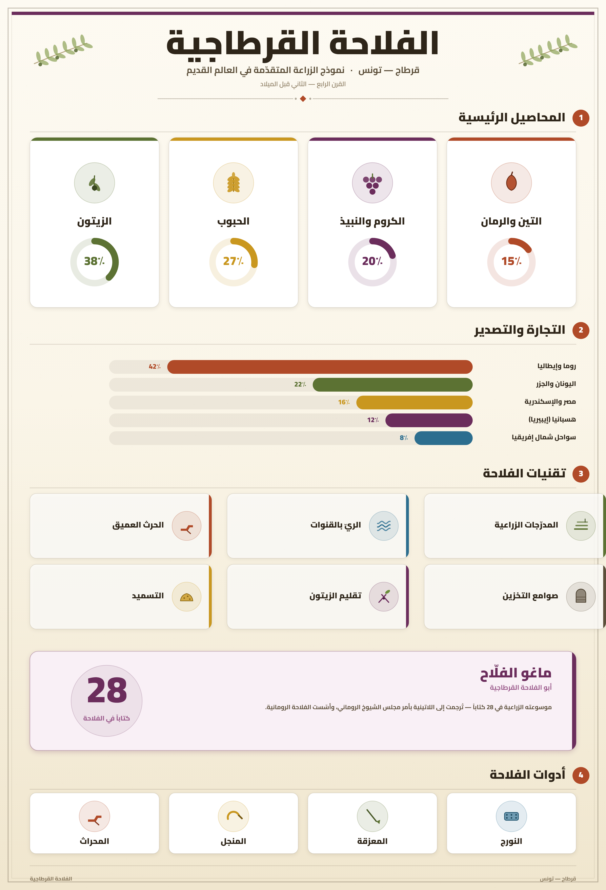
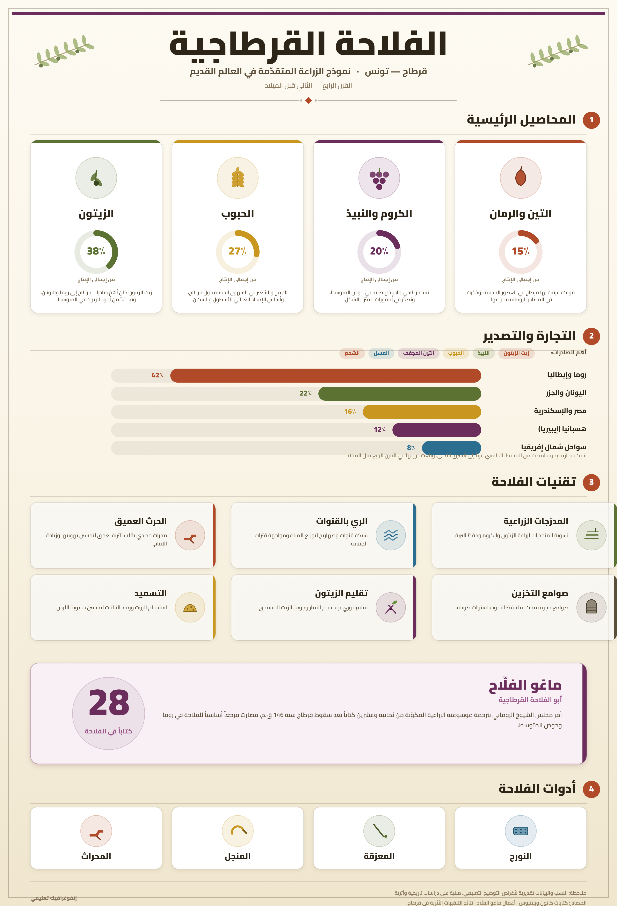

تمارين – قرطاج: موسوعة ماغون
- موسوعة ماغون:
- كتاب الفلاحة لماغون العالم الفلاحي القرطاجي، ويُعدّ من أهمّ المراجع الأساسيّة لعلم الزراعة في الفترة القديمة، جمع بين الطابع العلمي والعملي، واحتوى إضافات في تقنيات الإنتاج الفلاحي ودرجة التكثيف الزراعي والروزنامة الفلاحية وخصائص المجال الزراعي القرطاجي ونصائح حول استعمال اليد العاملة وارتباط القرطاجيين بالأرض. تجاوز صدى الموسوعة الحدود المجالية والزمنية لقرطاج البونية، إذ اعتبرها الرومان أهمّ غنائم الحرب البونية الثالثة وترجموها.
- الروزنامة الفلاحية:
- تقويم دقيق لمواسم الزرع والحصاد والأشغال الفلاحية المختلفة، ضبطته موسوعة ماغون لتنظيم النشاط الزراعي القرطاجي وفق تقويم محدد يساعد الفلاحين على حسن تدبير أعمالهم الزراعية.
- التكثيف الزراعي:
- كثافة الاستغلال الزراعي للأرض وكيفية تحقيق أفضل استغلال للمساحات المزروعة، وقد اهتمّت به موسوعة ماغون ضمن مضامينها التي تعنى بتقنيات الإنتاج الفلاحي والرفع من مردوديته.
- استعمال اليد العاملة:
- تنظيم العمل الفلاحي وتوزيع المهام على اليد العاملة، وقد قدّمت موسوعة ماغون نصائح عملية حول ذلك، مما يعكس اهتمام القرطاجيين بحسن تنظيم النشاط الزراعي وضمان نجاعته.


عكس ارتباط القرطاجيين بالأرض اهتمامهم الكبير بالنشاط الفلاحي، وهو ما تجسّد في تأليف ماغون لموسوعته الفلاحية. وقد شملت مضامين هذه الموسوعة تقنيات الإنتاج الفلاحي ودرجة التكثيف الزراعي والروزنامة الفلاحية وخصائص المجال الزراعي القرطاجي ونصائح حول استعمال اليد العاملة. ولم يكن هذا الارتباط بالأرض مجرد نشاط اقتصادي فحسب، بل كان ركيزة أساسية لبناء القوة القرطاجية، إذ أسهم في تطوّر النشاط الفلاحي، وفي ازدهار النشاط الحرفي المرتبط بالصناعات الفلاحية، وخاصة النشاط التجاري، مما مكّن من دعم الحضور القرطاجي في المتوسّط وترسيخ إشعاعه الحضاري.
| الميدان | مغطّى في الموسوعة |
|---|---|
| تقتنيات الإنتاج الفلاحي | 1 |
| درجة التكثيف الزراعي | 1 |
| الروزنامة الفلاحية | 1 |
| خصائص المجال الزراعي | 1 |
| استعمال اليد العاملة | 1 |
| ارتباط القرطاجيين بالأرض | 1 |
المصدر: مضامين موسوعة ماغون كما وردت في المصادر التاريخية القديمة والوسيطة
- مقدمة: تقديم موسوعة ماغون كمرجع فلاحي أساسي في العالم القديم.
- تطوير: أولاً. أثرها على النشاط الفلاحي؛ ثانياً. أثرها على النشاط الحرفي والتجاري.
- خاتمة: حصيلة الأثر ودورها في دعم الحضور القرطاجي بالمتوسط.
مقدمة
تُعدّ موسوعة ماغون أو «كتاب الفلاحة» من أهمّ المراجع الأساسيّة لعلم الزراعة في الفترة القديمة، وقد جمعت بين الطابع العلمي والعملي، وكانت لها آثار عميقة على مختلف القطاعات الاقتصادية في قرطاج البونية.
تطوير
أولاً. الأثر على النشاط الفلاحي
أسهمت موسوعة ماغون في تطوّر النشاط الفلاحي بقرطاج البونية من خلال تحسين تقنيات الإنتاج الفلاحي والرفع من مردوديته. فقد احتوت إضافات في مجال تقنيات الإنتاج ودرجة التكثيف الزراعي والروزنامة الفلاحية وخصائص المجال الزراعي القرطاجي، مما ساعد الفلاحين على حسن استغلال أراضيهم وتنظيم أعمالهم الزراعية وفق تقويم دقيق.
ثانياً. الأثر على النشاط الحرفي والتجاري
لم يقتصر أثر الموسوعة على القطاع الفلاحي فحسب، بل امتدّ إلى القطاع الحرفي، إذ ارتبط تطوّر الفلاحة بتطوّر الصناعات الحرفية المرتبطة بها كصناعة الأدوات الفلاحية والزجاج والفخار. كما أسهمت الموسوعة في ازدهار النشاط التجاري، إذ وفّرت فائضاً في الإنتاج الفلاحي قابلاً للتسويق والتصدير، مما عزّز مكانة قرطاج التجارية في المتوسط ومكّنها من دعم حضورها الاقتصادي والحضاري.
خاتمة
هكذا كان لموسوعة ماغون أثر عميق في الاقتصاد القرطاجي، إذ أسهمت في تطوّر النشاط الفلاحي والحرفي والتجاري، ومكّنت من دعم الحضور القرطاجي في المتوسط حتى بعد سقوط قرطاج سنة 146 ق.م.
الخط الزمني: القرن 3 ق.م: تأليف موسوعة ماغون ... 149 ق.م: اندلاع الحرب البونية الثالثة ... 146 ق.م: سقوط قرطاج واعتبار الرومان الموسوعة غنيمة.